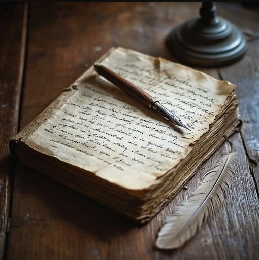
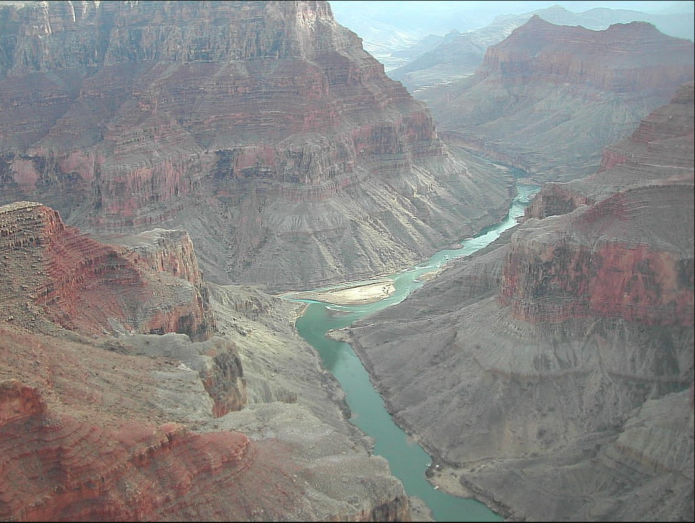

A digital final project exploring the nature of writing and what it means to be a writer by Jose Lopez.
What is Writing?
If you can decode the information, it would make the object a form of writing. If you are unable to
read or understand the information, does that imply the opposite? I will say no, because
the information is still present and the only hurdle is the lack of knowledge to interpret
that information. This is evident in mathematics as you go further into the upper levels
of study. We understand that math uses symbols and numbers to create formulas to understand
a topic. I could demonstrate to you a homework assignment I have and tell you the answer
is a numerical solution, but the process to begin solving the problem is a hurdle. As Euclid
quotes,” There is no royal road to geometry.” Writing is any system that can encode and
relay to an audience that can be interpreted and understood by others, emphasis on can be.

Who is a Writer?
We have defined what a writing is, so the next step is to learn how to define what the
creator of those writings are. A writer can be anyone or anything that can produce or
reproduce that information. This is obvious in literature, but in nature it is a bit
more subtle. In nature there is information and patterns that can be recognized and
understood. A good example of this is fluvial erosion. Fluvial erosion is where
water runs down a mountain or landscape and carves a path as it descends, creating
valleys and canyons. These formations tell a story about the landscape and open a
book of knowledge for those able to read it. Some patterns you can recognize from
mother nature using fluvial erosion is how the river system has evolved over time,
from a straight line to one that winds and turns. Looking at the grains in those
drainages can also help you understand how much energy flows in the river from high
energy with coarse gravel to fine silt for low energy. Writing is not limited to words;
it includes anything that can structure knowledge pass down through time.

The Object
Writing is a collaboration between the writer and the environment they grew up in. The author is not
just another name on a page. Writers are people and sometimes the system shapes and filters
the information to others. If there is only one author on a topic, they decide how the
information is understood. In mathematics, each mathematician builds on earlier knowledge
and is only limited by the technology they had access to at the time. Book in the past were
rare commodities, and access was limited and this was only changed thanks to the printing
press that allowed for cheap and quick reproduction of literature. In geology, natural
forces leave records for humans to read where weather and accessibility is your only enemy.
What connects all these forms of information is the ability to encode meaning and communicate
that information to others.
Reflection
This project pushed me to see writing as multimodal and something more than just a traditional pen
and paper. My website, the xerographic QR code, and my use of the LLM chatbot all show how writing
today blends both the physical and digital forms. The introduction of digital media is a recently
new form of writing compared to the last advancement in writing. Archives are beginning to digitally
store their books online to preserve that information and that shows how important it is to incorporate
new technologies with the old. Whether you are a librarian, mathematician, geologist, or an everyday writer
, people continue to adapt as technologies evolve. Writing is evolving along with it. Who knows what the
next technological advancement will be, only time would be able to tell.
Sources
Euclid. The Elements. Translated by Sir Thomas L. Heath, Dover Publications, 1956.
Devlin, Keith. The Math Gene: How Mathematical Thinking Evolved and Why Numbers Are Like Gossip. Basic Books, 2000.
Brierley, Gary J., and Kirstie A. Fryirs. Geomorphology and River Management. Blackwell Publishing, 2005.
Carter, Stephen. “AI Tools and the Future of Authorship.” The Atlantic, 2023.
Kinkead, Joyce. A Writing Studies Primer. 3rd ed., Utah State University Press, 2022.